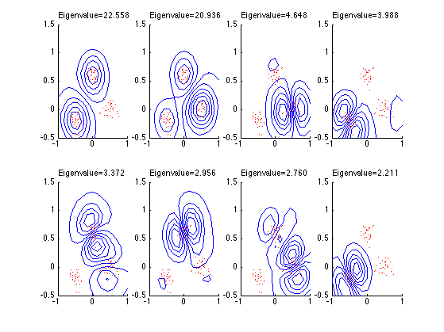

rbf_var = 0.1;
xnum = 4;
ynum = 2;
max_ev = xnum*ynum;
x_test_num = 15;
y_test_num = 15;
cluster_pos = [-0.5 -0.2; 0 0.6; 0.5 0];
cluster_size = 30;
num_clusters = size(cluster_pos,1);
train_num = num_clusters*cluster_size;
patterns = zeros(train_num, 2);
range = 1;
randn('seed', 0);
for i=1:num_clusters,
patterns((i-1)*cluster_size+1:i*cluster_size,1) = cluster_pos(i,1)+0.1*randn(cluster_size,1);
patterns((i-1)*cluster_size+1:i*cluster_size,2) = cluster_pos(i,2)+0.1*randn(cluster_size,1);
end
test_num = x_test_num*y_test_num;
x_range = -range:(2*range/(x_test_num - 1)):range;
y_offset = 0.5;
y_range = -range+ y_offset:(2*range/(y_test_num - 1)):range+ y_offset;
[xs, ys] = meshgrid(x_range, y_range);
test_patterns(:, 1) = xs(:);
test_patterns(:, 2) = ys(:);
cov_size = train_num;
for i=1:cov_size,
for j=i:cov_size,
K(i,j) = exp(-norm(patterns(i,:)-patterns(j,:))^2/rbf_var);
K(j,i) = K(i,j);
end
end
unit = ones(cov_size, cov_size)/cov_size;
K_n = K - unit*K - K*unit + unit*K*unit;
[evecs,evals] = eig(K_n);
evals = real(diag(evals));
for i=1:cov_size,
evecs(:,i) = evecs(:,i)/(sqrt(evals(i)));
end
unit_test = ones(test_num,cov_size)/cov_size;
K_test = zeros(test_num,cov_size);
for i=1:test_num,
for j=1:cov_size,
K_test(i,j) = exp(-norm(test_patterns(i,:)-patterns(j,:))^2/rbf_var);
end
end
K_test_n = K_test - unit_test*K - K_test*unit + unit_test*K*unit;
test_features = zeros(test_num, max_ev);
test_features = K_test_n * evecs(:,1:max_ev);
figure;
for n = 1:max_ev,
subplot(ynum, xnum, n);
axis([-range range -range+y_offset range+y_offset]);
imag = reshape(test_features(:,n), y_test_num, x_test_num);
axis('xy')
colormap(gray);
hold on;
contour(x_range, y_range, imag, 9, 'b');
plot(patterns(:,1), patterns(:,2), 'r.')
text(-1,1.65,sprintf('Eigenvalue=%4.3f', evals(n)));
grid off
hold off;
end
printPmtkFigure('kpcaScholkopfNoShade')
